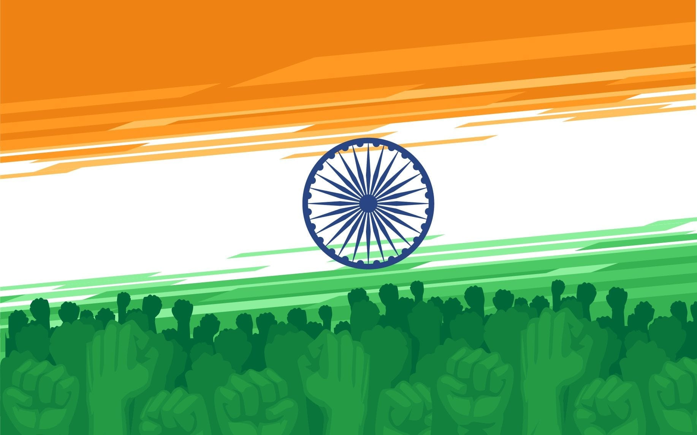

MAY 22, 2021
The virulent propagation of nationalism in the wake of the Pulwama outrage reminds me of Arthur Schopenhauer’s prophetic words in Essays and Aphorisms ~ “Every miserable fool who has nothing at all of which he can be proud, adopts as a last resource pride in the nation to which he belongs; he is ready and happy to defend all its faults and follies tooth and nail, thus reimbursing himself for his own inferiority.” Nationalism in its widest sense creates an unreal vision of oneness of religion, language and literature, indeed culture, caste, creed and territorial definition of a geographical area; those that do not comply are outlanders, fit for extermination. By its inherent machismo, nationalism is misogynist, brazenly racist and sectarian and often fatally violent, if we recount the persecution of Jews and Armenians. There is nothing wrong in possessing a sense of national pride. Indeed, the Peace of Westphalia (1645) was the starting point of nationalism that witnessed the emergence of the modern nation-state in Italy and Germany over two centuries later.